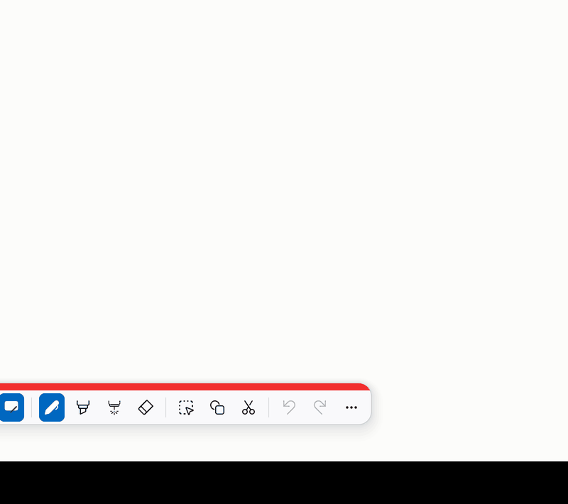

Windows 10 / 11 · 最新 9.8.0 · 10 种语言
InkTeach 是一层透明的课堂批注画布，浮在 PPT / WPS / PDF / 图片 / 任意软件之上。 手写、荧光笔、激光笔、截图、数学图形都在同一层里完成；底下的内容一点没动。 板书存在本机，不改变原文件，也不需要安装 .NET。
下载安装包（国内直连） GitHub Releases 看看功能
免装 .NET · 安装包 15.5MB / 绿色包 18.7MB · 开源 GPL-3.0 · 安装不需要管理员权限

手写一个歪圆 → 停住 0.4 秒自动变规整图形 → 选中拖动 → 截图取景
不用把 PPT 导出成图片，也不用先切到白板。打开要讲的内容，InkTeach 就在它上面。
PPT、PDF、图片都不动；板书在自己的图层里，退出后原文件还是原样。
PPT / WPS 放映、PDF 阅读器、图片查看器、浏览器和任意软件都能直接写。
板书、收藏、名单存在本机；支持自动保存、历史板书和全局备份。
批注、课堂工具、数学图形和效率操作，都在这一层里。
放映时直接在幻灯片上写、画、圈；翻页不串页，每一页的板书单独保存。
打开 PDF 一页一页讲，批注跟着页面走；支持导入、翻页和自动保存。
试题截图、照片、地图都能直接标注；透明 PNG 保留透明背景。
没有 PPT 也能上白板；独立多页、网格/横线背景，随时切换。
三种笔各有颜色和粗细；荧光笔每个色位独立透明度；激光笔红边白芯，指哪讲哪。
框选屏幕区域，确认后直接贴回板书；可调整边框、复制到剪贴板。
手写一个歪圆、三角形或直线，停 0.4 秒自动变规整；不用切工具。
抛物线、双曲线、正弦余弦、圆柱圆锥球、棱柱棱锥……拖顶点就能改；直线分实线 / 虚线 / 点线三张卡。
图形、图片、笔迹拖动自动对齐；选中后可移动、缩放、旋转、复制、删除。
常讲的图形、题目截图存进收藏；分类、搜索、拖到画布即用。
课堂计时、随机点名放在浮窗里；不打断板书，也不用来回切软件。
主工具带只占一条，贴边自动收起；按住全局键划一下就能切工具；支持深色主题。
不是“能画图”，而是每个定义元素都能直接拖。
抛物线四个开口方向、双曲线（可带渐近线）、正弦 / 余弦 / 正切 / 波浪线、坐标系；拖动参数看变化。
圆柱、圆锥、圆台、球、棱柱、棱锥、棱台；拖动改比例，讲体积和截面更直观。
顶点、控制点都能拖；旋转、缩放、吸附、复制；画完还是可编辑对象，不是一张死图。
对象吸附会把图形、图片和笔迹对齐到边、中心线或同一水平/垂直方向，拖图不再靠眼估。
PPT / WPS 放映、PDF、图片，或者直接开白板。不用先导出、也不用换软件。
手写、荧光笔、激光笔、截图、数学图形都在同一层；停顿一下还能把歪图画规整。
PPT 每页批注隔离；PDF / 图片批注跟着页面走；自动保存，课后还能找回。
当前最新版 9.8.0。只列最影响课堂体验的几条，完整记录在《发版历史》。
安装器和界面支持中 / 英 / 日 / 韩 / 德 / 法 / 西 / 巴西葡 / 俄 / 意；设置里切换后重启生效。源码回到原开源仓库，恢复 GPL-3.0。
选中图片一键去黄提亮；AI 把题目照片识别成可编辑题卡，原图保留，答案可按需生成。
输入框、面板、对话框共用一套输入；选中手写可 AI 识别成文本并保留原墨迹。
完整更新与校验值：GitHub 发版历史 ｜ Release 列表。
当前版本 9.8.0 · AOT 单 exe，安装包 15.5MB / 绿色包 18.7MB（以实际发布件为准） · 免装 .NET。
双击 → 下一步 → 完成，不弹 UAC：装到当前用户目录，自动更新也不会要管理员。
批量部署可静默安装：InkTeach-Setup-*.exe /VERYSILENT。
Ctrl + L 激光笔 · Ctrl + E 橡皮 · Ctrl + Alt + Shift + Q 呼出盘 · Ctrl + Alt + Shift + T 穿透 / 回画笔
InkTeach 以 GPL-3.0 开源，可商业授权。源码在 GitHub，国内镜像在 GitCode； 问题、建议和更新日志都在仓库里。